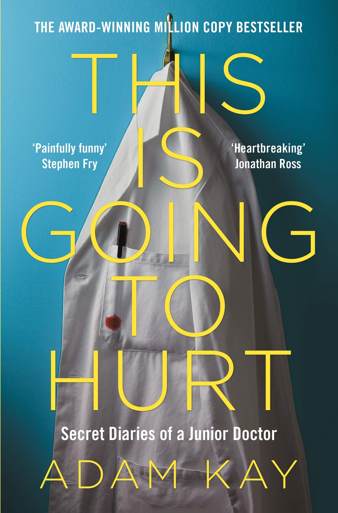
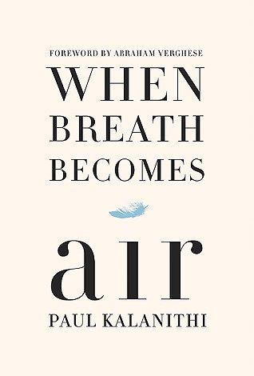
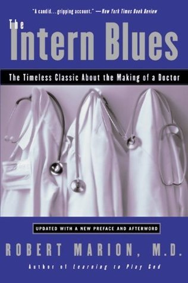

This is Going to Hurt: Secret Diaries of a Junior Doctor by Adam Kay

This funny yet shocking book has been a bestseller for over a year, won four National Book Awards and
been
the Sunday Times Number One Bestseller for over eight months.
Why has this book captivated so many readers? That has to be down to the sheer honesty of the author
Adam
Kay, a Junior Doctor who writes about his experiences working for the UK’s NHS in obstetrics and
gynecology.
Created from pages of his own diaries after long, tiring shifts, Kay leaves out no detail of his life as
a
junior doctor, and the results are often shocking, hilarious and heartbreaking.
Medicine students will enjoy this book’s ability to make you laugh out loud, but also appreciate its
honest
portrayal of the not always glamourous life of a junior doctor.
Anyone who really enjoys this book will be pleased to know the BBC are releasing a TV adaptation. Fans
may
also be interested in reading Kay’s latest novel T’was the Nightshift before Christmas, which was
published
earlier this year.
When Breath Becomes Air by Paul Kalanithi

Paul Kalanithi was a Neurosurgeon who got diagnosed with inoperable lung cancer at the age of thirty-six, on the brink of completing his medical training. After many years being a doctor treating the dying, he became the patient.
What comes out of this is a touching exploration of life, death and the relationship between a doctor and a patient.
This is a book which you will find hard to forget and is undeniably inspiring despite its gloomy topic. Any medical student or anyone considering studying medicine should read this book.
The Intern Blues by Robert Marion

The Intern Blues follows three interns talking about their experiences throughout their year-long internships, where they had to deal with 100-hour weeks, being given life or death responsibility and surviving on very little sleep.
Before this puts you off medicine completely, you’ll be pleased to know that this book was written in 1985 and there have since been strict restrictions placed on the hours worked by residents.
However, many medicine students remark that the feelings, emotions and work described are still very relevant today and hence the book has been deemed a contemporary classic.